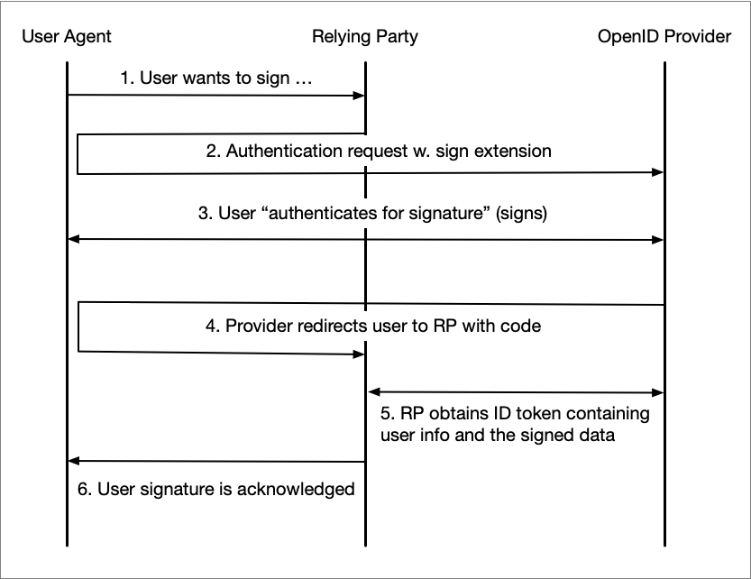

Signature Extension for OpenID Connect
Version: 1.0 - draft 02 - 2023-04-27
Abstract
This specification defines an extension to OpenID Connect to facilitate use cases where a Relying Party sends a "Signature Request" to an OpenID Provider. A signature request is an extension of an OpenID Connect authentication request where a "Signature Request" object is passed as a request parameter or a Request Object.
Table of Contents
-
3.1. The Signature Request Parameter
3.1.1. Placement of the Parameter in an Authentication Request
3.1.2. Security Requirements
3.2. Signature Scope
-
4.1. Requests
4.1.1. Requirements on Signing User
-
5.3. Discovery
1. Introduction
This specification defines an extension to OpenID Connect to facilitate that a user digitally signs data provided by a Relying Party at the OpenID Provider.
The rationale behind this specification is that the OIDC Sweden Working Group has seen the need to offer a standardized OpenID Connect way of handling both authentication and signature since most eID providers in Sweden supports both authentication and signing.
This specification should not be seen as a competitor to any of the full-blown signature specifications such as OASIS DSS, but instead as the OpenID Connect-equivalent to the proprietary API:s offered by eID providers. In fact, this specification says nothing about signature formats, validation or any other part of the complex world of digital signatures.
Note: This specification is written in the context of the The Swedish OpenID Connect Profile, [OIDC.Sweden.Profile], and therefore compliance with this specification also requires compliance with [OIDC.Sweden.Profile].
1.1. Requirements Notation and Conventions
The key words “MUST”, “MUST NOT”, “REQUIRED”, “SHALL”, “SHALL NOT”, “SHOULD”, “SHOULD NOT”, “RECOMMENDED”, “MAY”, and “OPTIONAL” are to be interpreted as described in [RFC2119].
These keywords are capitalized when used to unambiguously specify requirements over protocol features and behavior that affect the interoperability and security of implementations. When these words are not capitalized, they are meant in their natural-language sense.
2. The Use Case
The use case that this profile seeks to find an OpenID Connect solution to is as follows:
The Relying Party delegates the signing operation to the OpenID Provider by sending an authentication request with a sign extension. The flow below illustrates each step in for this delegated signing model.

The user wants to sign something at the Relying Party, for example a form, and clicks "Sign".
The Relying Party (client) initiates an "authentication for signature" by redirecting the user to the OpenID Provider along with an authentication request containing a sign extension (see section 3.1 below).
During the authentication/signing the user actually performs a signature of the "to-be-signed" data that was supplied as an extension to the authentication request. In this step the OpenID Provider also displays a summary of what is being signed.
After a completed signature operation the user agent is redirected back to the client along with an authorization code.
Next, the client obtains an ID token that contains information about the signee along with the signed data.
Finally, the completed signature operation is acknowledged to the user.
The advantage with this use case is that it is simple and straightforward. The disadvantage is that only OpenID Providers that actually supports eID:s that support creating signatures can be used.
3. Identifiers
This section extends [OIDC.Sweden.Attr] with definitions of parameter claims and scopes used for the signing use case defined in this specification.
3.1. The Signature Request Parameter
Parameter: https://id.oidc.se/param/signRequest
Description: The signature request parameter is included in an authentication request by the Relying Party in order to request a user signature. The signature request parameter contains input for this signature operation.
Value type: The value for the signature request parameter claim is a JSON object1 with the following fields:
tbs_data- The data to be signed as a Base64-encoded string. This specification does not specify the format on the supplied data. It is regulated by the signature scheme being used. This field is mandatory.sign_message- A sign message is the human readable text snippet that is displayed to the user as part of the signature process2. Thesign_messagefield is a JSON object according to thehttps://id.oidc.se/param/userMessagerequest parameter as defined in section 2.1 of [OIDC.Sweden.Param]. This field is mandatory.
Example:
...
"https://id.oidc.se/param/signRequest" : {
"tbs_data" : "<Base64-encoded data>",
"sign_message" : {
"message" : {
"sv" : "<Base64-encoded sign message in Swedish>",
"en" : "<Base64-encoded sign message in English>"
},
"mime_type" : "text/plain"
}
},
...[1]: Depending on where in a request the parameter is placed, the value may be a JWT, see [section 3.1.1](#placement-of-the- parameter-in-an-authentication-request) below.
[2]: Whether the contents of the sign message is part of the signature input data at the OpenID Provider or not is not regulated by this profile.
3.1.1. Placement of the Parameter in an Authentication Request
The https://id.oidc.se/param/signRequest request parameter, can be provided in an authentication
request in two ways; as a custom request parameter where its value is represented as a JWT, or as part of a Request Object
that is the value to the request (or request_uri) parameter.
3.1.1.1. As a Custom Request Parameter
If the sign request parameter is included as a custom request parameter its value MUST be represented as a JWT following the security requirements specified in section 3.1.2 below.
Below follows a minimal, and non-normative, example redirect by the client, which triggers the user agent to make a "signature"1 request to the authorization endpoint:
HTTP/1.1 302 Found
Location: https://server.example.com/authorize?
response_type=code
&scope=openid%20https%3A%2F%2Fid.oidc.se%2Fscope%2Fsign
&client_id=exampleclientid
&state=af0ifjsldkj
&prompt=login%20consent
&redirect_uri=https%3A%2F%2Fclient.example.org%2Fcb
&https%3A%2F%2Fid.oidc.se%2Fclaim%2FsignRequest=eyJhbjIn0.ew0...MbpL-2QgwUsAlMGzwThe scopes requested are openid (always) and https://id.oidc.se/scope/sign (see section 3.2,
Signature Scope) that instructs the OpenID Provider that this is a signature request.
In a real-life scenario, the Relying Party would probably request additional claims using additional scopes, for example,
https://id.oidc.se/scope/naturalPersonNumber and https://id.oidc.se/scope/authnInfo (see [OIDC.Sweden.Attr]).
The parameter https://id.oidc.se/param/signRequest is among the parameters and its value is a JWT
(abbreviated for readability). This parameter value holds the input to the signature operation.
[1]: There is no such thing as an OpenID signature request. The example is really an authentication request carrying the signature request parameter.
3.1.1.2. Placed in a Request Object
The signature request parameter and value can also be part of a Request Object JWT that is the value for the request (or request_uri) parameter.
Since the Request Object is a JWT, the value for the signature request parameter is in these cases a JSON object.
See section 6, "Passing Request Parameters as JWTs", in [OpenID.Core] for details.
Note: It is perfectly legal to create a request where some parameters are assigned as regular request parameters
and some are included in the Request Object. However, since the Request Object MUST be signed (see below) the iss
(issuer) and aud (audience) claims MUST be included in the Request Object.
The following is a non-normative example of the claims in a Request Object before Base64, URL-encoding (and signing):
{
"iss": "exampleclientid",
"aud": "https://server.example.com",
"response_type": "code",
"redirect_uri": "https://client.example.org/cb",
"scope": "openid https://id.oidc.se/scope/sign",
"prompt": "login consent"
"https://id.oidc.se/param/signRequest": {
"tbs_data" : "VGhpcyBpcyB0aGUgZGF0YSB0aGF0IEkgd2FudCB0byBzaWdu",
"sign_message" : {
"message" : {
"sv" : "RGVubmEgdGV4dCB2aXNhcyBmw7ZyIGFudsOkbmRhcmVu",
"en" : "VGhpcyBpcyB0ZXh0IGRpc3BsYXllZCBmb3IgdGhlIHVzZXI="
},
"mime_type" : "text/plain"
}
}
}
When the client creates a redirect response, which triggers the user agent to make an "signature"1 request to the authorization endpoint it looks like:
HTTP/1.1 302 Found
https://server.example.com/authorize?
response_type=code
&client_id=exampleclientid
&scope=openid%20https%3A%2F%2Fid.oidc.se%2Fscope%2Fsign
&state=af0ifjsldkj
&nonce=n-0S6_WzA2Mj
&request=eyJhbGciOiJSUzI1NiIsImtpZCI6ImsyYmRjIn0.ew0KICJpc3MiOiAiczZCaGRSa3...xMbpL-2QgwUsAlMGzwThe example illustrates how a Request Object is passed by value. See section 6.2, "Passing a Request Object by Reference", in [OpenID.Core] for how to use the request_uri instead.
[1]: There is no such thing as an OpenID signature request. The example is really an authentication request carrying the signature request parameter.
3.1.2. Security Requirements
The contents of the https://id.oidc.se/param/signRequest parameter hold the data to be signed, and it is essential
that no party can alter this while the request message is in transit. Therefore, the following security requirements
apply for Relying Parties and OpenID Providers that are compliant with this specification:
If the signature request parameter is included as a custom request parameter (see 3.1.1.1 above), its value represented as a JWT MUST be signed by the client's registered key, and MAY be encrypted to the recipient's registered public key.
If the signature request parameter is part of a Request Object according to section 3.1.1.2 above, the entire Request Object JWT MUST be signed by the client's registered key, and MAY be encrypted to the recipient's registered public key.
3.2. Signature Scope
Scope: https://id.oidc.se/scope/sign
Description: The scope has two purposes; it indicates for the OpenID Provider that the request in which the scope is included is a "signature request", and it requests the claims declared in the table below.
| Claim | Description/comment | Reference | Requirement |
|---|---|---|---|
https://id.oidc.se/claim/userSignature |
The signature that is the result of the user signing process at the OP. | [OIDC.Sweden.Attr] | REQUIRED |
auth_time |
The time when the signature was created. | [OpenID.Core] | REQUIRED |
Note: The https://id.oidc.se/scope/sign alone does not say anything about the identity of the signing end-user.
A Relying Party wishing to get this information, which it most likely does, should include additional scopes in the
request that declares which identity claims that are wanted.
4. Relying Party Requirements
4.1. Requests
A Relying Party wishing to issue a request for signature according to the specification MUST include
https://id.oidc.se/scope/sign along with the mandatory openid as values to the scope request parameter.
A request for signature MUST contain the Signature Request Parameter and its inclusion in the request MUST follow the requirements stated in sections 3.1.1, Placement of the Parameter in an Authentication Request and 3.1.2, Security Requirements.
The authentication request MUST contain the prompt parameter1 and its value MUST include both the
login and consent parameter values. The reason for this is that a signature must never be generated based on a previous authentication (login) and that the Relying Party wants to ensure that the user actually sees the sign message and understands
that he or she is performing a signature operation (consent).
The Relying Party SHOULD examine the discovery document regarding supported MIME types for the sign_message field of the
https://id.oidc.se/param/signRequest request parameter value (see section 5.3), and only use a MIME
type supported by the OpenID Provider. If no such information is available in the OP discovery document, the Relying
Party SHOULD use the MIME type text/plain for the sign message.
[1]: The
promptparameter can be provided either as an ordinary request parameter or as a field in a Request Object.
4.1.1. Requirements on Signing User
In most cases a user is already logged into the service that wants the user to sign some data, for example an approval or a document. The data that is to be signed can be sensitive, and the service will need to ensure that only the intended user can view this data.
A Relying Party wanting to bind a signature operation to a particular identity SHOULD assign the necessary identity
claim(s) to the claims request parameter and for each claim set the essential field to true and the value field
to the required identity value. See chapter 5.5.1 of [OpenID.Core].
Request Object example of how we request that the signature is for the given user having the supplied personal identity number (URL-encoding not applied for readability reasons):
{
...
"claims" : {
"id_token" : {
"https://id.oidc.se/claim/personalIdentityNumber" : {
"essential" : true,
"value" : "196903261687"
}
}
},
} 5. OpenID Provider Requirements
This section contains requirements for OpenID Providers compliant with this specification.
5.1. Processing Requirements
An OpenID Provider receiving a request containing the https://id.oidc.se/scope/sign value among the scope request
parameter values MUST ensure the following:
That the request also contains the
https://id.oidc.se/param/signRequestrequest parameter.That the
https://id.oidc.se/param/signRequestvalue is signed and that the signature can be successfully verified. See section 3.1.2, Security Requirements.That the
promptparameter is present and contains theloginandconsentvalues.
If any of the above requirements fail, an error response where the error code is invalid_request1 MUST be sent.
If the OpenID Provider receives an authentication request containing the https://id.oidc.se/param/signRequest request
parameter and the scope parameter does not include the https://id.oidc.se/scope/sign value, the OP MAY ignore
the https://id.oidc.se/param/signRequest request parameter, or respond with an error.
If the request for signature contains a claims parameter2 holding identity value(s) marked as essential (see
section 4.1.1 above), the OpenID Provider MUST NOT display the supplied sign message
or initiate the signature operation before the user's identity has been proven to match these value(s). If the user
identity does not match the supplied value(s) in the claims parameter, an error response MUST be sent.
The processing of the supplied signature message (sign_message field of the https://id.oidc.se/param/signRequest parameter)
MUST follow the requirements stated in section 2.2.1 of [OIDC.Sweden.Profile]. If the message for
some reason can not be displayed2, the the signature operation MUST be rejected (and an error message sent).
The OpenID Provider SHOULD NOT save the user's signature operation in its session at the OP for later re-use in SSO-scenarios. The reason for this is that a signature operation is inheritely non-SSO, and authentication and signature operations should not be mixed.
[1]: See section 4.1.2.1 of [RFC6749].
[2]: An OpenID Provider compliant with this specification MUST also be compliant with [OIDC.Sweden.Profile], and that profile requires OpenID Providers to support the
claimsrequest parameter.
[3]: For example an unsupported MIME type was specified.
5.2. Response Requirements
Claims that are representing the result of a signature operation, such as the https://id.oidc.se/claim/userSignature
claim, MUST be delivered in the ID Token and never from the UserInfo endpoint.
5.3. Discovery
OpenID Providers that are compliant with this specification1, MUST meet the following requirements discovery requirements:
The scopes_supported MUST be present in the provider's discovery document and it MUST contain the scope
https://id.oidc.se/scope/sign.
Also, it is RECOMMENDED that the https://id.oidc.se/scope/authnInfo scope is supported and declared. See [OIDC.Sweden.Attr].
The claims_supported field MUST be present and include at least the claims that are included in the scope definitions for all
declared scopes (in the scopes_supported).
The request_parameter_supported MUST be present, and SHOULD be set to true (i.e., the OpenID Provider has support for
handling signature requests sent by value as Request Objects).
The request_uri_parameter_supported MUST be present, and it is RECOMMENDED that it is set to true (i.e., the OpenID Provider
has support for handling signature requests sent by reference as Request Objects).
As already stated in section 5.2 of [OIDC.Sweden.Profile], the claims_parameter_supported SHOULD be present
and set to true.
Support of sign messages during a signature operation is REQUIRED by this specification. It is
RECOMMENDED that the OpenID Provider also supports displaying of "client provided user messages",
as defined in section 2.1 of [OIDC.Sweden.Param]. This capability is declared
using the discovery parameter https://id.oidc.se/disco/userMessageSupported (see section 3.1.1 of
[OIDC.Sweden.Param]). This effectively means that the OP supports displaying of
user messages also when the user authenticates (as opposed to signs).
The https://id.oidc.se/disco/userMessageSupportedMimeTypes field, defined in section 3.1.2 of
[OIDC.Sweden.Param], SHOULD be used to declare which MIME types that are supported
regarding the sign_message field of the https://id.oidc.se/param/signRequest parameter value.
If not declared, [ "text/plain" ] MUST be assumed.
[1]: An OpenID Provider compliant with this specification MUST also be compliant with [OIDC.Sweden.Profile] and thus meet the requirements stated in section 5.2 of that profile.
6. Normative References
Bradner, S., Key words for use in RFCs to Indicate Requirement Levels, March 1997.
RFC6749 - The OAuth 2.0 Authorization Framework, October 2012.
Sakimura, N., Bradley, J., Jones, M. and E. Jay, "OpenID Connect Discovery 1.0", August 2015.
Jones, M., Bradley, J., and N. Sakimura, “JSON Web Token (JWT)”, May 2015.
Attribute Specification for the Swedish OpenID Connect Profile.
Authentication Request Parameter Extensions for the Swedish OpenID Connect Profile.